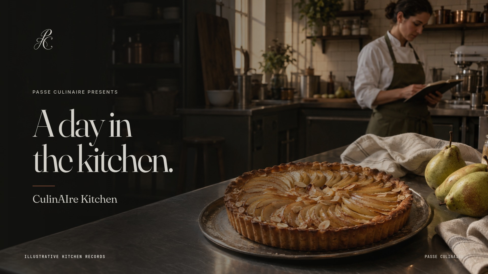

AN ILLUSTRATIVE KITCHEN DAY
A day in the kitchen.
The ingredients.
The people. The decisions.

The film could not load. Read the kitchen story below.
An illustrative kitchen day. Photographic scenes and animated records.
THE KITCHEN, CONNECTED
Before the first knife.
The chef and owner look ahead to service. Expected covers and the preparation plan shape what the team will make.
Read the full kitchen story
- Opening. In a quiet restaurant before service, the chef and owner look over the day ahead.
- Forecast. Expected covers, recipe yields and menu costs help shape a preparation plan.
- Pantry. The chef draws ingredients from the pantry and records the transfer to the pastry section.
- Preparation. Pears are weighed, prepared and set into a tart. The recipe connects the ingredients and the batch.
- Service. The team finishes the pastry and brings the preparation through to the pass.
- Stock and waste. Ingredients used, usable stock returned and preparation waste are recorded separately.
- Receiving. The chef inspects a delivery against the purchase order and notes any shortage.
- The team. The chef and owner review section responsibilities, the roster and the service handover.
- Sales. Sales data is uploaded and the day's service is compared with the forecast.
- Tomorrow. The day's records inform a fresh look at the next preparation plan.
Illustrative figures: 80 forecast covers and 74 actual; 24 pear tart portions prepared, 21 sold and 3 remaining for review. Pear stock begins at 8 kg, with 3 kg drawn, 2.4 kg used in the recipe, 0.3 kg returned and 0.3 kg recorded as waste. A 10 kg delivery is accepted against 12 kg ordered. Closing stock is 15.3 kg.
This is an illustrative kitchen story, not a product screen or a claim of automatic product behaviour.